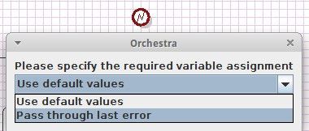

Error

Topic content
Description
Ends a process with an error.
Purpose of object
The error end event ends a process with an error.
Create
1. Create a process model
2.Then point the mouse on "process", as default, this field is on the right side of the Orchestra window.
3.Click on the folder end events to see its content.
4.Click on "error".
5.Click on any place in your process model.
6.Specify the required variable assignment.

7.Connect it to other process model items, by clicking on the item and drag and drop the arrow to the error event .
Icon
Configuration
1. Double click on the symbol to change the specifications.
2. In the expression of "ERROR" you can define your end events.
Variable assignment
If "Use default values" is selected, a new error object is created with createErrorInfo and filled to the variable ERROR:
If "Pass through last error" is selected, the variable ERROR from the process model is used: